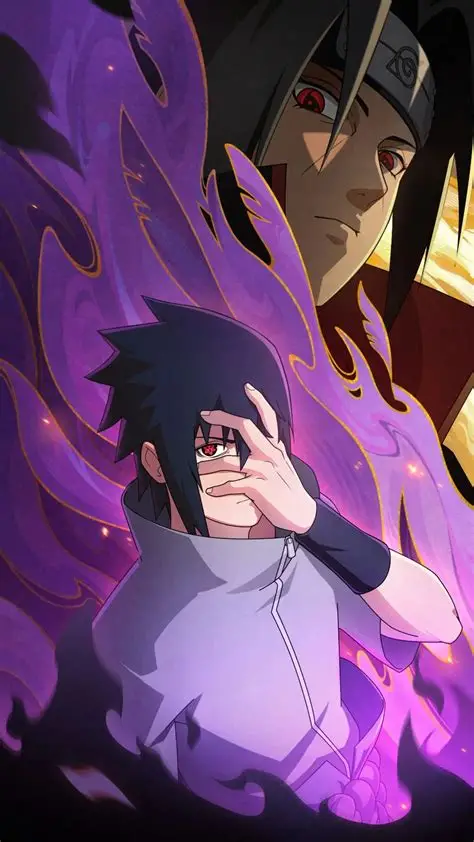

宇智波佐助，宇智波一族仅存的后裔，忍界顶尖强者，与漩涡鸣人并称忍界双雄，是火影核心主角之一。
一、童年岁月 家族剧变
出身木叶豪门宇智波一族，自幼天资卓越，年少便开启写轮眼。
童年生活安稳幸福，十分崇拜兄长宇智波鼬，一心想要追随兄长脚步。
一夜之间遭遇灭族惨案，全族族人尽数惨死，仅剩自己孤身存活。
得知凶手是亲哥哥鼬后，内心被仇恨填满，从此一心只为复仇而活。
二、刻苦修行 一心复仇
幼年经历巨变后性格变得冷漠孤僻，抛弃一切情感专注修炼忍术。
进入木叶忍者学校，毕业后加入第七班，与鸣人、小樱成为队友。
跟随旗木卡卡西学习忍术，快速掌握多种高强招式，实力飞速提升。
始终认为留在木叶无法快速变强，内心愈发渴望强大的力量。
三、叛离木叶 追寻力量
为获得足够力量杀死鼬，毅然离开木叶，投奔大蛇丸潜心修行。
在大蛇丸处习得大量禁术与实战技巧，熟练掌握多种属性忍术。
常年独自厮杀历练，心性愈发冷酷，逐渐远离曾经的同伴与初心。
实力稳步攀升，顺利开启万花筒写轮眼，拥有极强的专属瞳术。
四、手刃仇敌 认清真相
学成之后果断出手斩杀大蛇丸，组建小队四处游走，伺机复仇。
最终与宇智波鼬展开宿命决战，历经苦战成功将兄长击杀。
战后得知灭族全部真相，知晓鼬一生隐忍与无尽牺牲，陷入巨大痛苦。
仇恨彻底消散，内心陷入迷茫，一度想要颠覆整个木叶忍村。
五、融合瞳力 成就永恒
经历思想挣扎后，接受鼬的眼睛，融合双眼成就永恒万花筒写轮眼。
彻底摆脱普通万花筒视力衰退的副作用，瞳术力量达到全新高度。
熟练掌握天照、加具土命、须佐能乎等顶级强力忍术，战力达到影级巅峰。
重新审视忍界格局，开始思考忍者真正的生存意义与和平之道。
六、忍界大战 携手并肩
第四次忍界大战正式登场，放下过往恩怨，与鸣人联手对抗反派势力。
觉醒六道之力，开启轮回眼，获得专属顶级忍术，跻身六道级强者行列。
与鸣人并肩作战，一路冲破重重危机，最终合力封印大筒木辉夜。
战后与鸣人展开最终宿命对决，二人一战彻底解开多年心结。
七、放下执念 独行守护
大战结束后彻底醒悟，放弃颠覆村子的想法，选择独自游历忍界。
常年在外暗中游走，清理潜藏的黑暗势力，默默守护木叶与整个忍界。
放下年少仇恨与执念，正视亲情、友情与同伴情谊。
从此以独行忍者的身份行走世间，默默守护来之不易的和平。
八、人物信条
曾经只为仇恨活着，如今只为守护世间安稳独行。